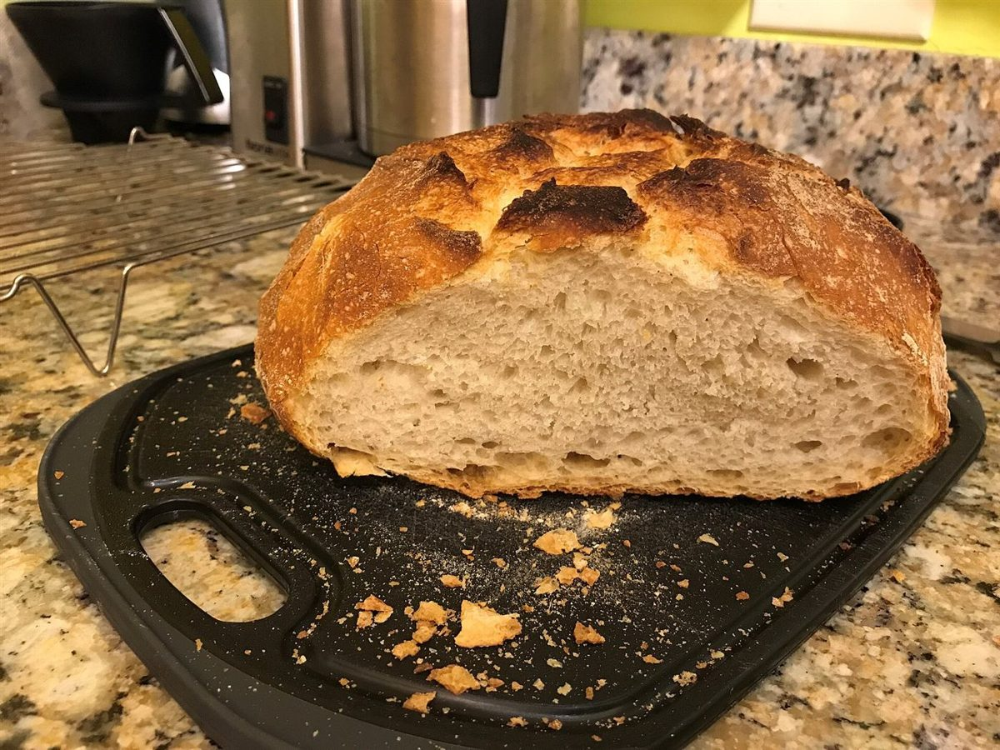
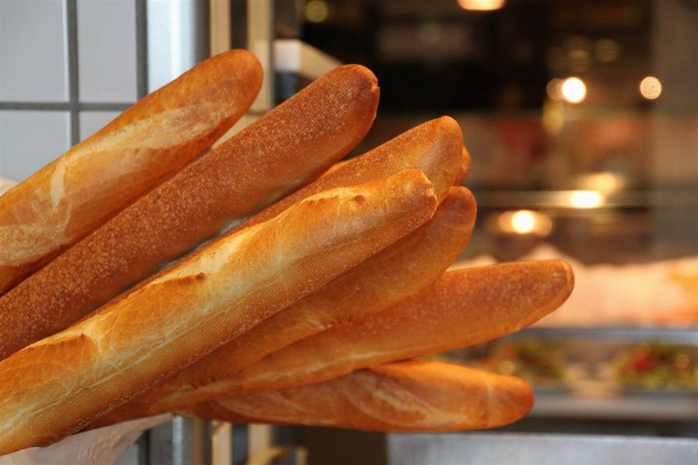
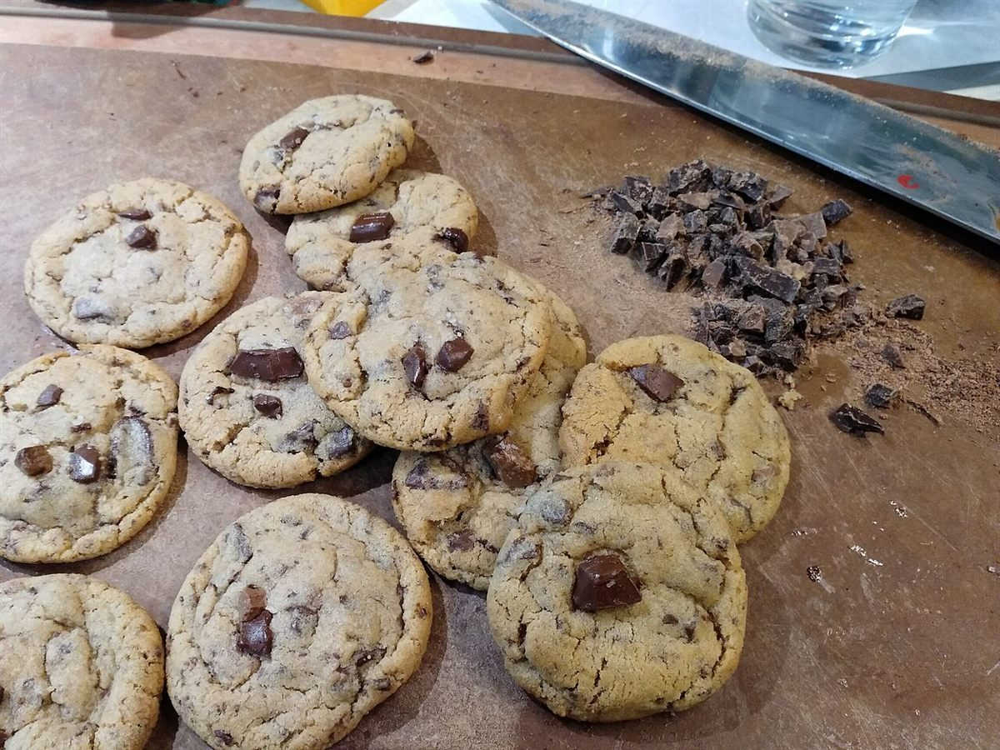

店のこと
店のこと
お店について確認できているのは、所在地・電話番号・Instagramのアカウントです。
このページの「想像してみる」部分は、制作側が想像して書いたものです。お店の実際の様子・考え・メニューとは関係がありません。
確認できていること
- 店名は「Patisserie bianco nero」、業種はベーカリー(洋菓子・パン系)
- 所在地は広島県三次市十日市南２丁目１５−１４(〒728-0014)
- 電話番号は0824-53-1315
- 営業時間・定休日・メニュー・価格・ご予約・駐車場は準備中

想像してみる
「bianco nero」という名前から
由来は分かりません。制作側は、白と黒という二つの色を店名に置いたお店かもしれない、と想像しました。たとえば白い小麦粉と黒いココアのように、対になる二つが並ぶ姿です(実際のお店の姿ではありません)。


